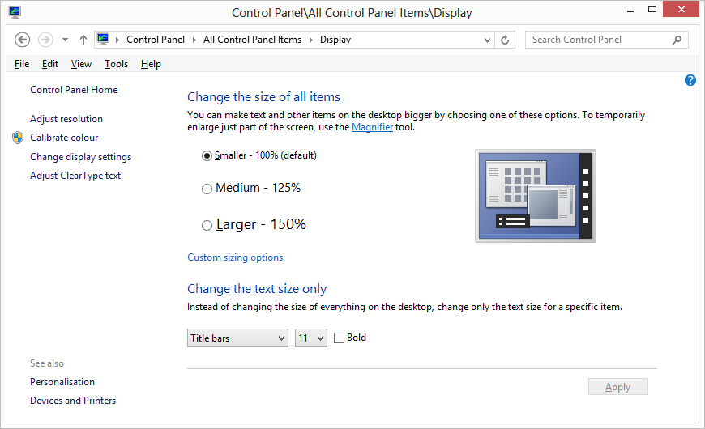

High DPI Support
Modern high resolution screens present some practical challenges to a Graphical User Interface that was designed when lower-resolution screens were the norm. When you increase resolution you inherently decrease the size of each pixel (assuming same display size). By decreasing the size of each pixel the content shown on the display appears smaller. When display Dots-Per-Inch (DPI) gets sufficiently dense this shrinking effect can make content hard to see and user interface components such as menus and buttons, difficult to click/tap.
Also, people have different preferences and Windows enables the user to change the DPI setting.

To address this issue, the Desktop Window Manager, which is enabled in Windows Vista and above, automatically scales up windows and their content to match the current DPI setting.
The problem with this approach is that, because the scaling is implemented by bitmap stretching, application user-interfaces windows tend to look fuzzy and/or distorted.
DPI-Awareness
To prevent the DWM from stretching its user-interface, a Windows application can declare itself to be DPI-Aware. If so, the application is expected to handle DPI issues itself. Whether it does so by scaling GUI components according to the DPI in use, or not, is up to the application itself. If an application chooses to register itself as DPI-aware, but fails to scale its GUI components on a high DPI device, they will simply appear physically smaller on the screen.
An application can declare itself as being DPI-Aware by making a system call or by making a declaration in the optional XML manifest file that may be associated with its .exe.
Dyalog APL will register itself as being DPI-Aware on startup if the value of the AUTODPI parameter is 1. This is the default, so in a standard developer installation, Dyalog APL itself and all Dyalog applications driven by the development and run-time versions of Dyalog are by default registered as DPI-Aware, so DPI scaling by the DWM is disabled.
This can be changed by setting the AUTODPI parameter to 0 (or by removing it) or using a declaration in a manifest file. See Enabling DWM Stretching.
Coord Property
Dyalog APL includes a mechanism to automatically scale a pixel coordinate user-interface according to the DPI setting. This works by introducing two new coordinate types named ScaledPixel and RealPixel and by changing the way that the existing Pixel coordinate type is interpreted.
ScaledPixel means that the number of pixels specified will be automatically scaled by Dyalog APL according to the user's chosen display scaling factor. ScaledPixel also means that Dyalog will automatically de-scale coordinate values reported by ⎕WG and coordinate values in event messages.
RealPixel means that Dyalog APL will precisely honour the number of pixels you specify and will apply no scaling. GUI windows and components will simply appear physically smaller on higher DPI devices.
The Dyalog Session uses Coord 'ScaledPixel' and all the GUI components of the Session are therefore DPI-scaled by Dyalog itself.
Pixel Coordinates and DYALOG_PIXEL_TYPE
Dyalog Versions prior to Version 14.1 did not support ScaledPixel and RealPixel options; just Pixel. Rather than force users to change all pixel coordinate types in legacy applications, Dyalog provides a parameter named DYALOG_PIXEL_TYPE whose value is either ScaledPixel or RealPixel. If the value of the Coord property is 'Pixel' this is interpreted as meaning whichever value is specified by DYALOG_PIXEL_TYPE.
If the DYALOG_PIXEL_TYPE parameter is not specified (the default), it defaults to RealPixel. So by default, Coord 'Pixel', will be treated as RealPixel and your Dyalog APL GUI application will simply appear physically smaller on higher DPI devices.
DYALOG_PIXEL_TYPE may be set to ScaledPixel by ticking the check-box on the General Tab of the Configuration Dialog box labelled Enable DPI Scaling of GUI application.
If this check-box is cleared the DYALOG_PIXEL_TYPE parameter will be removed from the current user's registry.
Using ScaledPixel coordinates, if you specify an Edit object to be 80 units wide and 20 units high, and the user's scaling factor is 150%, Dyalog will automatically draw it 120 pixels wide and 30 pixels high. You won't have to change any of your code that handles the Edit, it will just appear larger on the screen than if it hadn't been scaled. Similarly, if you use the ScaledPixel coordinate type for the Font object, the font used to draw text in the object will automatically be scaled for you.
Font Object
The Font object has a Coord property which can be set to 'Pixel', 'ScaledPixel', or 'RealPixel' when the object is created, but cannot subsequently be changed. The Font object does not support other Coord values. 'Pixel' is treated as 'ScaledPixel' or 'RealPixel' as discussed above.
If you are using 'ScaledPixel', this means that your fonts will also be scaled up automatically, as well as the sizes of the controls in which they are used.
Set Dyalog Pixel Type (2035⌶)
This function provides the means to set the meaning of Coord 'Pixel' programmatically and dynamically. This function affects the way that Pixel coordinates are subsequently treated. For further information, see Set Dyalog Pixel Type.
Enabling DWM Scaling
The DPI-Aware scaling features provided by Dyalog APL are designed to allow you to deploy GUI applications that look attractive in most situations, whatever the screen resolution and scaling factor is in use.
However, if you wish to ignore these facilities and fall back on Windows DWM scaling, you may do so as follows.
If you wish to enable DWM scaling in your application, you can either remove or set to zero the AUTODPI parameter. For example, the command line to start a run-time application might be:
dyalogrt.exe myruntime.dws AUTODPI=0This will prevent Dyalog from registering your application as DPI-Aware in start-up.
Another way to enable DWM scaling is to use a manifest file. If you disable DWM scaling for the development version of Dyalog, the appearance of the Session window might be imperfect.
Using a Manifest
A Windows application can declare itself to be DPI-aware or not using a declaration in the optional XML manifest file associated with its .exe. If you want your Dyalog APL application to be automatically scaled by the DWM, you may use a manifest file to override the call that Dyalog itself makes to register itself as being DPI-Aware.
This is done by setting the XML entity dpiAware to the value false as illustrated by the skeleton manifest file listed below.
<assembly xmlns="urn:schemas-microsoft-com:asm.v1" manifestVersion="1.0" xmlns:asmv3="urn:schemas-microsoft-com:asm.v3" >
<asmv3:application>
<asmv3:windowsSettings xmlns="http://schemas.microsoft.com/SMI/2005/WindowsSettings">
<dpiAware>false</dpiAware>
</asmv3:windowsSettings>
</asmv3:application>
</assembly>If dpiAware appears in the manifest file, its value take precedence over the value of the AUTODPI parameter, whether it is specified implicitly by omission (it defaults to 1) or is specified in the registry or on the command line.
Naming a Manifest File
The name of the manifest file is the full name of the application file followed by an optional resource id (if omitted, the default is 1) and the extension .manifest. If your application runs courtesy of the dyalogrt.exe or dyalogrt.dll, the name of the manifest file should be one of:
dyalogrt.exe.<resource ID>.manifest
dyalogrt.dll.<resource ID>.manifestIf you have exported your application as an executable called example.exe or as a dll called example.dll, it should be one of:
example.exe.<resource ID>.manifest
example.dll.<resource ID>.manifest